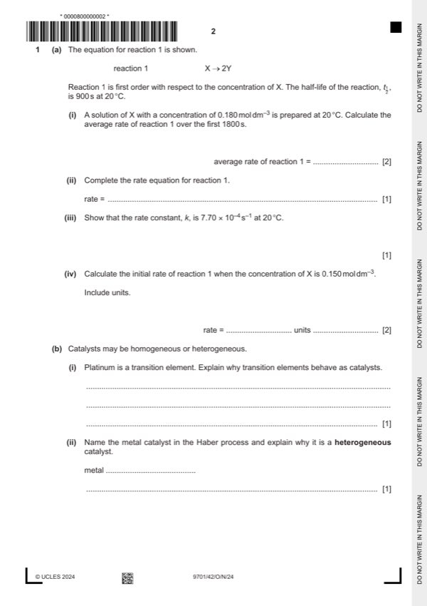

Question 1

Original paper page 2
Part 1(a)(i) — solution
- Change in concentration = 0.135 [1] 2
- 0.135 / 1800 = 7.5 10–5 [1]
Mark points
- Change in concentration = 0.135 [1] 2
- 0.135 / 1800 = 7.5 10–5 [1]
Part 1(a)(ii) — solution
- Rate = k[X] [1] 1
Mark points
- Rate = k[X] [1] 1
Part 1(a)(iii) — solution
- k = 0.693 / t½ / k = 0.693 / 900 / k = ln2 / t½ / k = ln2 / 900 / t½ = ln2 / k [1] 1
Mark points
- k = 0.693 / t½ / k = 0.693 / 900 / k = ln2 / t½ / k = ln2 / 900 / t½ = ln2 / k [1] 1
Part 1(a)(iv) — solution
1.16 10–4 [1] 2
mol dm–3 s–1 [1]
Mark points
- Include the ideas shown in the solution above.
Part 1(b)(i) — solution
- variable oxidation state
- vacant / empty / unfilled d orbitals [1]
- can form dative bonds / can accept electrons
Mark points
- variable oxidation state
- vacant / empty / unfilled d orbitals [1]
- can form dative bonds / can accept electrons
Part 1(b)(ii) — solution
Iron AND 1
iron is solid, reactants are gases OR
catalyst and reactants are in different phases / states [1]
Mark points
- Include the ideas shown in the solution above.
Part 1(b)(iii) — solution
- adsorption of reactants by Pt
- bonds of reactants weaken [1]
- desorption of products [1]
Mark points
- adsorption of reactants by Pt
- bonds of reactants weaken [1]
- desorption of products [1]
Part 1(b)(iv) — solution
- NO2 + SO2 → NO + SO3 AND 1
- 2NO + O2 → 2NO2 [1]
Mark points
- NO2 + SO2 → NO + SO3 AND 1
- 2NO + O2 → 2NO2 [1]
Part 1(c) — solution
- 3H2SO3 + 2BiO+ + H2O → 3SO42- + 8H+ + 2Bi [1]
Mark points
- 3H2SO3 + 2BiO+ + H2O → 3SO42- + 8H+ + 2Bi [1]